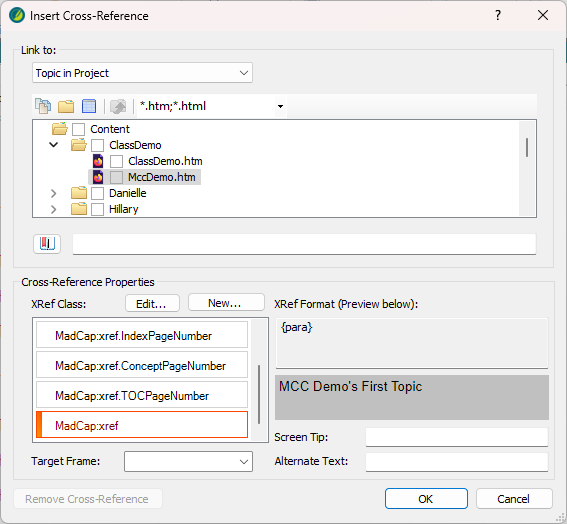
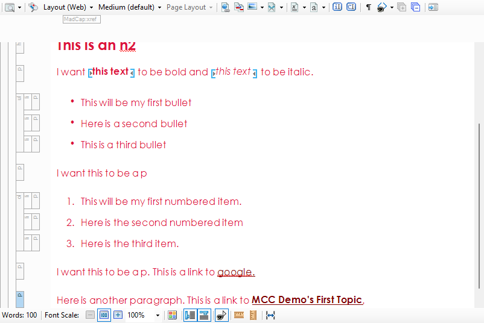

You often need to link to other topics in your Flare project.
I am not familiar with Flare, but tools like this often have features that auto-generate links. For example, you may automatically get links to the parent topic, next topic, etc.
Be aware of what your output generates to be sure you're not adding too many links to your content.
Use Place in this document to link to other headings or sections in the topic you're working on. Use Topic in Project to link to a completely different topic.
In this example we are going to pick a Topic in Project.
In a real project, you would pick the cross-reference format to have just the title, or title and page number, etc.

The link is inserted. The text of the link will depend upon your XRef Format. In this example, the title of the linked topic is automatically inserted.
